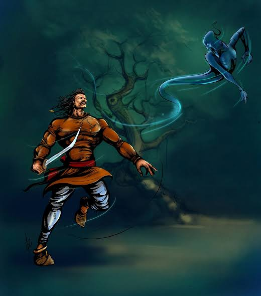
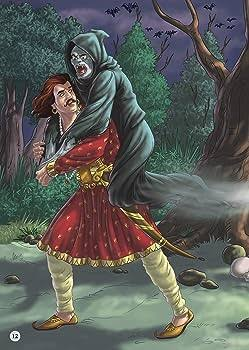

22.કોણ સૌથી વધુ પ્રેમ માં આંધળું હતું ? |
યોગીને આપેલું વચન પૂરું કરવા માટે, સમ્રાટ વિક્રમાદિત્યએ ફરી એક વાર બેતાલને ઝાડ પરથી ઉતારીને પોતાના ખભા પર બેસાડ્યો. આ પછી તે યોગી પાસે ગયો. પોતાનો રસ્તો શોધવા બેતાલે એક નવી વાર્તા શરૂ કરી. બેતાલે કહ્યું...
 તે લાંબા સમય પહેલા થયું હતું. પદ્મનાભ નામનો રાજા વિશાલા નામના રાજ્યમાં રાજ કરતો હતો. તેના રાજ્યમાં એક શાહુકાર રહેતો હતો. એ સાહુકારનું નામ અર્થદત્ત હતું. અર્થદત્તને એક સુંદર પુત્રી અનંગમંજરી હતી. જ્યારે અનંગમંજરી મોટી થઈ, ત્યારે શાહુકારે તેના લગ્ન મણિવર્મા નામના ધનિક શાહુકાર સાથે કર્યા. મણિવર્મા અનંગમંજરીને ખૂબ ચાહતા હતા, પરંતુ અનંગમંજરીને મણિવર્મા બિલકુલ પસંદ નહોતા.
એક દિવસ મણિવર્મા પોતાના રાજ્યની બહાર કોઈ કામ માટે ગયા હતા અને અનંગમંજરી એકલા હતા. જેથી તે તેના ઘરથી થોડે દૂર ફરવા નીકળી હતી. પછી રસ્તામાં અનંગમંજરીએ રાજપુરોહિતના પુત્ર કમલાકરને જોયો. અનંગમંજરી કમલાકરને જોતાં જ તેના પ્રેમમાં પડી ગઈ. બીજી તરફ કમલાકર પણ અનંગમંજરીને મનમાં ચાહવા લાગ્યો હતો.
અનંગમંજરી કોઈપણ વિલંબ કર્યા વિના મહેલના બગીચામાં જાય છે અને ચંડી દેવીને પ્રણામ કરે છે. અનંગમંજરી હાથ જોડીને ચંડી દેવીને પ્રાર્થના કરે છે, "હે માતા, જો હું કમલાકરને આ જીવનમાં ન મેળવી શકું તો પછીના જન્મમાં મારે તેની પત્ની બનવું જોઈએ."
આમ કહીને અનંગમંજરીએ તેનો દુપટ્ટો ખેંચી લીધો અને ઝાડ પર લટકી જવાની તૈયારી કરવા લાગી. એટલામાં રાજ્યની દાસી અને અનંગમંજરીના મિત્ર ત્યાં આવ્યા. મિત્રે કહ્યું, "અનંગમંજરી, તું શું કરે છે?" આના પર અનંગમંજરી તેને પોતાની લાગણીઓ કહે છે. આ સાંભળીને મિત્ર કહે, “જરા પણ ચિંતા ન કર. ટૂંક સમયમાં હું તમને કમલાકર સાથે પરિચય કરાવીશ.” મિત્રની આ વાત સાંભળીને અનંગમંજરી અટકી ગઈ.
 બીજે જ દિવસે અનંગમંજરીના મિત્રએ તેને કમલાકરને મળવાની વ્યવસ્થા કરી. બંને એકબીજાને મળવા બગીચામાં પહોંચ્યા. બંનેએ એકબીજા સામે જોયું અને પોતાની જાતને રોકી ન શક્યા. કમલાકર હતાશામાં અનંગમંજરી તરફ દોડ્યો. કમલાકરને પોતાની નજીક આવતો જોઈને અનંગમંજરીના હૃદયના ધબકારા વધી ગયા અને ખુશીના કારણે તેના ધબકારા બંધ થઈ ગયા. અનંગમંજરીને મૃત જોઈને કમલાકર પણ ખૂબ જ દુઃખી થયા, જેના કારણે તેમનું હૃદય ફાટી ગયું અને તેમનું પણ મૃત્યુ થયું.આ દરમિયાન મણિવર્મા પણ ત્યાં પહોંચી ગયો અને પોતાની પત્નીને અન્ય પુરુષ સાથે મૃત હાલતમાં પડેલી જોઈને ખૂબ જ દુઃખી થયો. તેઓ અનંગમંજરીને ખૂબ ચાહતા હતા. તેથી, તે તેની પત્નીથી છૂટાછેડાને સહન કરી શક્યો નહીં અને તેણે પોતાનો જીવ પણ આપી દીધો. આ બધું જોઈને ચંડીદેવી પોતે ત્યાં પ્રગટ થયા અને બધાને જીવિત કર્યા.
આટલું કહીને બેતાલે કહ્યું, "બિક્રમને કહો, આ ત્રણમાંથી સૌથી વધુ પ્રેમમાં આંધળો કોણ હતો?"
જ્યારે વિક્રમ કંઈ બોલ્યો નહીં ત્યારે બેતાલે ફરી કહ્યું, "વિક્રમને કહો, પ્રેમમાં આંધળો કોણ હતો?"
જ્યારે બેતાલે વારંવાર પૂછ્યું ત્યારે વિક્રમે કહ્યું, “સાંભળો બેતાલ, મણિવર્મા પ્રેમમાં સૌથી અંધ હતા. કારણ એ છે કે અનંગમંજરી અને કમલાકર અચાનક મળ્યા અને એ ખુશીને લીધે જ તેમનું મૃત્યુ થયું. જ્યારે મણિવર્મા એ જોઈને દુઃખમાં મૃત્યુ પામ્યા કે તેમની પત્ની કોઈ બીજાને પ્રેમ કરે છે અને તેમના પ્રેમને મળવાના આનંદમાં મૃત્યુ પામ્યા.
આ સાંભળીને બેતાલે કહ્યું, “હા રાજન, તેં સાચો જવાબ આપ્યો, પણ તેં કહ્યું એટલે હું ત્યાંથી નીકળી ગયો. આટલું કહીને બેતાલ ફરી વિક્રમના ખભા પરથી ઊડીને ફરી ઝાડ પર લટકી ગઈ. આ સાથે જ પ્રેમમાં અંધ બનેલા વિક્રમ બેતાલની વાર્તા પૂરી થાય છે.
કોઈપણ વસ્તુનો અતિરેક હાનિકારક હોઈ શકે છે, તેથી વ્યક્તિએ હંમેશા તેની લાગણીઓને નિયંત્રિત કરવી જોઈએ